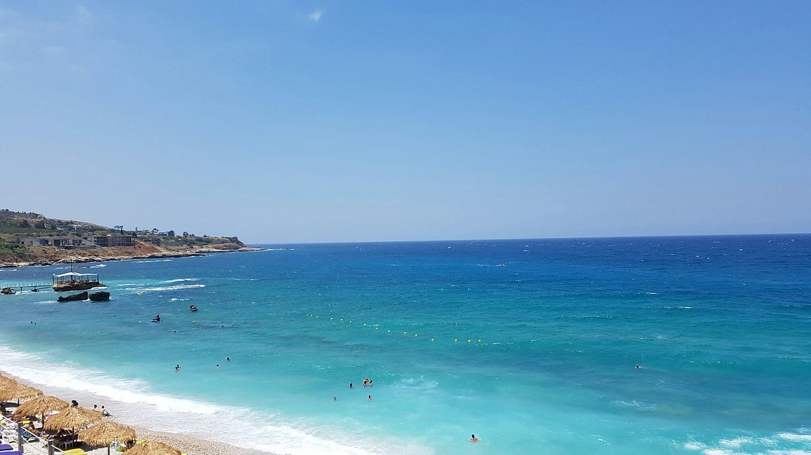
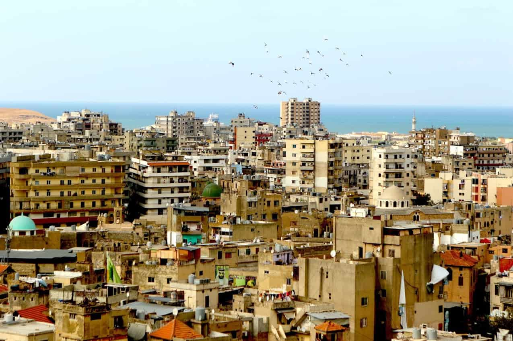
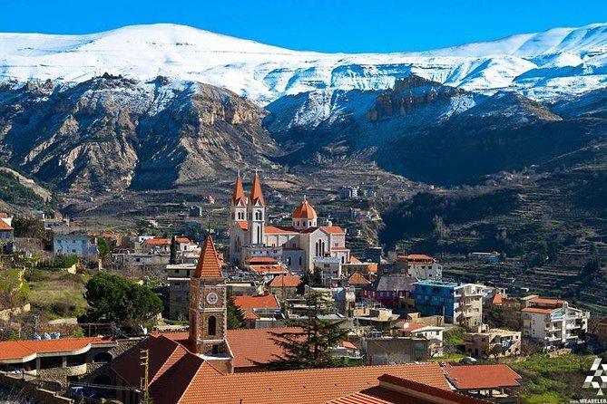
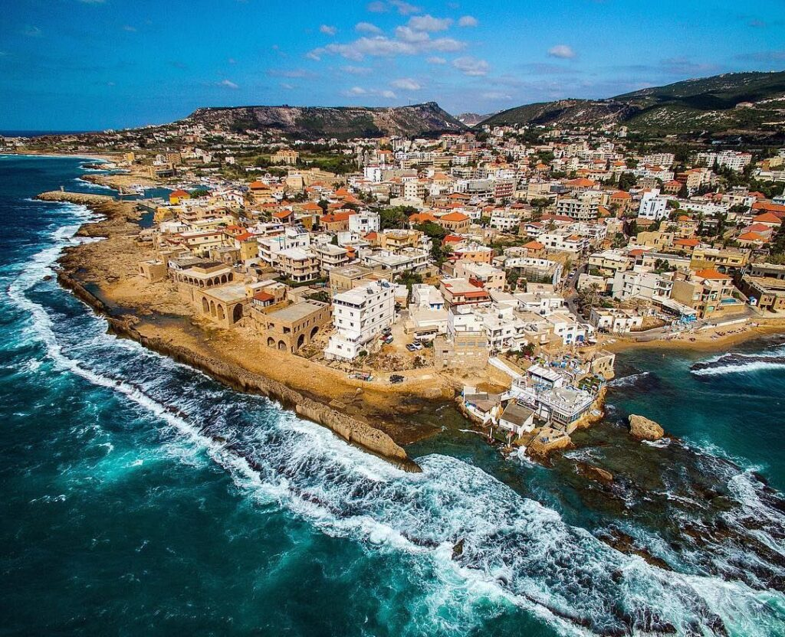
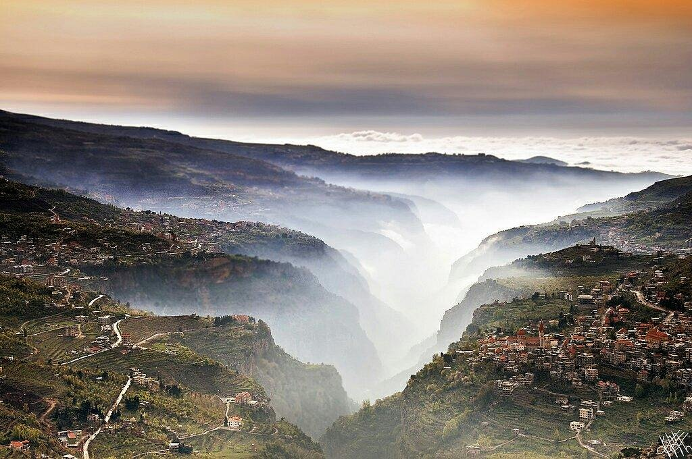
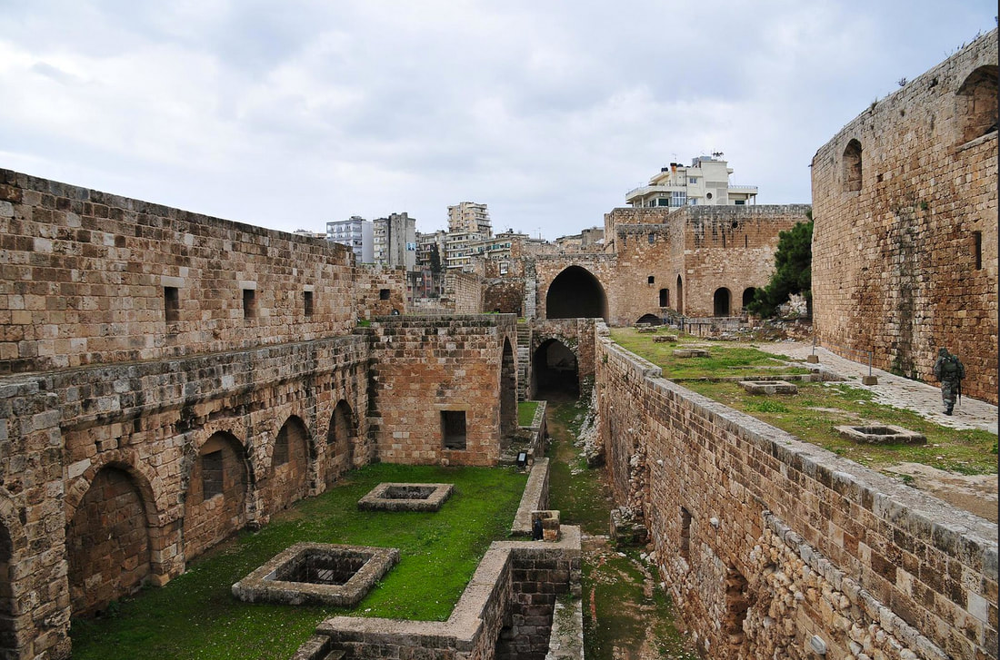
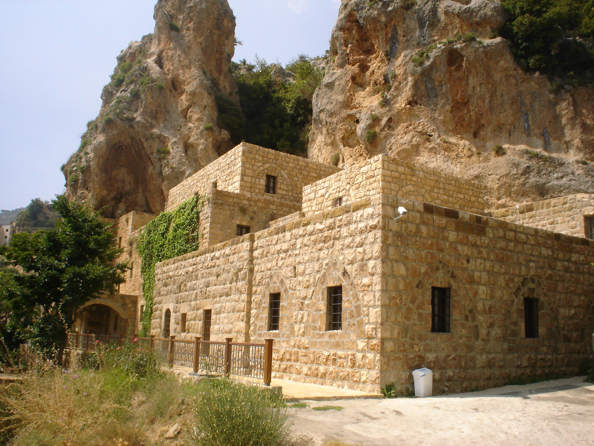
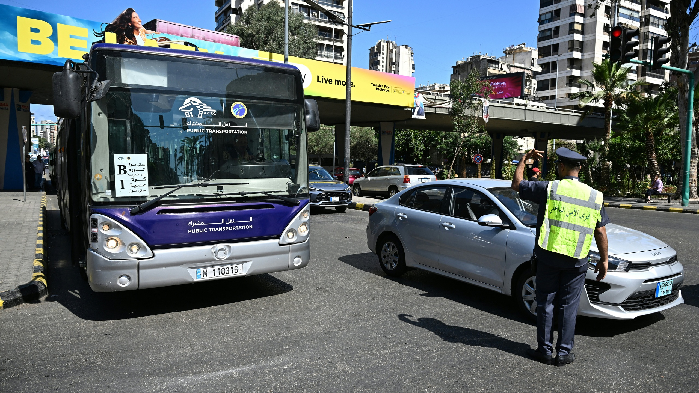
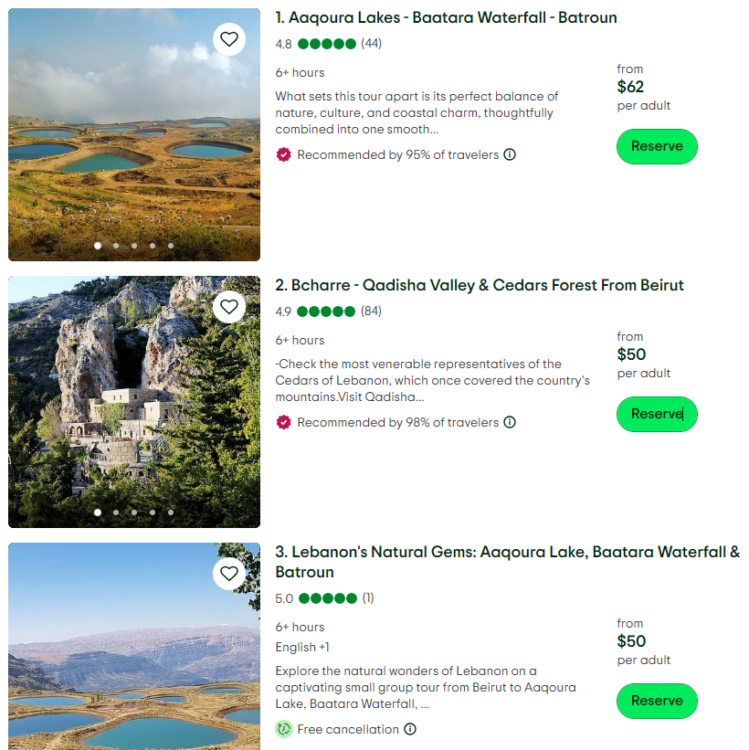

Ministry of Tourism Lebanon
DISCOVER LEBANON
The North Governorate stretches along Lebanon's upper coast and reaches deep into the country's mountainous interior. To the west, the Mediterranean Sea defines the shoreline with ancient port cities and fishing villages that have been inhabited for millennia. To the east, the land rises sharply into the Lebanon Mountain range, home to some of the country's most dramatic scenery.
The Qadisha Valley, a UNESCO World Heritage Site, cuts through the northern mountains like a deep green wound, its sheer cliffs sheltering ancient monasteries that cling to the rock face. Above the valley, the Cedars of God forest stands at over 2,000 meters elevation, one of the last remaining cedar groves in the world.
The climate shifts dramatically with altitude. Tripoli and the coast enjoy warm Mediterranean weather year-round, while the mountain towns of Bsharri and the Cedars receive heavy snowfall in winter, making them a destination for skiers and hikers alike.


Tripoli is Lebanon's second-largest city and one of the most historically rich urban centers in the Arab world. Its medieval old city is a maze of Mamluk-era mosques, hammams, khans, and souks that have changed little in centuries. The city is also famous for its sweets, particularly its kunafa and halawet el-jibn, drawing food lovers from across the country.

Perched high in the northern mountains, Bsharri is the hometown of Khalil Gibran, Lebanon's most celebrated poet and the author of The Prophet. The town sits dramatically above the Qadisha Valley and is home to the Gibran Museum, built inside a carved rock monastery. In winter, the nearby Cedars ski resort draws visitors from across Lebanon and beyond.

One of the oldest continuously inhabited cities in the world, Batroun is a charming coastal town that has recently become one of Lebanon's most beloved weekend destinations. Its old town features a Phoenician sea wall, a beautiful St. Stephen's Cathedral, and a thriving strip of beach bars, restaurants, and craft breweries that buzz with life every summer.

Known for its fierce pride and strong cultural identity, Zgharta is a Maronite Christian stronghold in the northern interior. The town is famous for its traditional architecture, its role in Lebanese political history, and its proximity to the ancient ruins of Ehden, a stunning summer village that sits above Zgharta with sweeping views of the mountains and coast.

One of the most sacred and ancient natural sites in Lebanon, the Cedars of God forest near Bsharri contains trees that are over 1,000 years old. These are the last descendants of the vast cedar forests that once covered Lebanon's mountains and supplied timber to the Phoenicians, Egyptians, and Romans. Standing among them is a deeply moving experience, quiet, ancient, and unlike anywhere else on Earth.
The Qadisha Valley is one of Lebanon's most dramatic natural landscapes, a deep, verdant gorge carved into the northern mountains, its cliffs dotted with ancient hermitages and monasteries. It has been a refuge for Maronite Christians since the early centuries of the faith, and the valley floor is laced with hiking trails that wind past waterfalls, ruins, and centuries-old churches. A place of profound beauty and spiritual weight.


The old city of Tripoli is one of the best-preserved medieval Islamic cities in the world. Its labyrinthine souks are organized by trade, the gold souk, the soap souk, the copper souk, just as they were in the Mamluk era. Above it all looms the Citadel of Raymond de Saint-Gilles, a Crusader fortress that has watched over the city for nearly a thousand years.
Built inside the 7th-century Monastery of Mar Sarkis, the Gibran Museum houses the largest collection of Khalil Gibran's paintings, drawings, and personal belongings in the world. Gibran himself is buried in a cave within the monastery grounds. For admirers of Lebanese literature and art, this is a pilgrimage site, intimate, moving, and set against one of the most beautiful mountain backdrops in Lebanon.

Tripoli, the capital of the North Governorate, is about 85 km from Beirut, roughly an hour to 1.5 hours by car along the coastal highway. From Tripoli, the rest of the governorate fans out in every direction.
International visitors arrive at Beirut–Rafic Hariri International Airport. Tripoli is then reached by car heading north along the coastal highway, a scenic drive past several historic towns.
Follow the coastal highway north from Beirut through Jounieh and Batroun until you reach Tripoli. From there, mountain roads branch east toward Bsharri, the Cedars, and Ehden. A car is essential for reaching the highland areas.
Frequent minibuses and service taxis run between Beirut's Charles Helou Station and Tripoli throughout the day. From Tripoli's Abdul Hamid Karami Square, local taxis continue to surrounding towns and villages.
Mountain roads toward Bsharri and the Cedars can be icy or snow-blocked from November through March. Always check conditions before heading up, and consider snow chains in deep winter.

The North Governorate offers one of the most complete travel experiences in all of Lebanon, ancient history, dramatic nature, vibrant street life, and a mountain culture that is deeply proud of its roots.
Lose yourself in the souks of Tripoli's old city, buy handmade soap, fresh spices, and gold jewellery in markets that have operated for over 700 years.
Hike the Qadisha Valley floor trail, where waterfalls, monastery ruins, and towering cliffs accompany every step of the journey.
Stand among the ancient cedars at golden hour, when the long light filters through thousand-year-old branches and the forest falls completely silent.
Spend an evening in Batroun's old town, eat fresh seafood, drink local craft beer, and watch the sun set over the Phoenician sea wall.
Visit the Gibran Museum in Bsharri and sit for a moment in the cave where Lebanon's greatest writer rests, a quiet, unforgettable experience.
